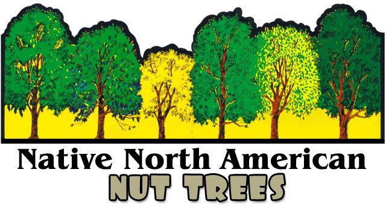
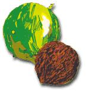
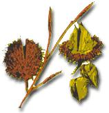
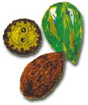
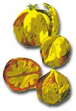
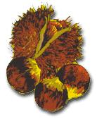
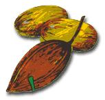
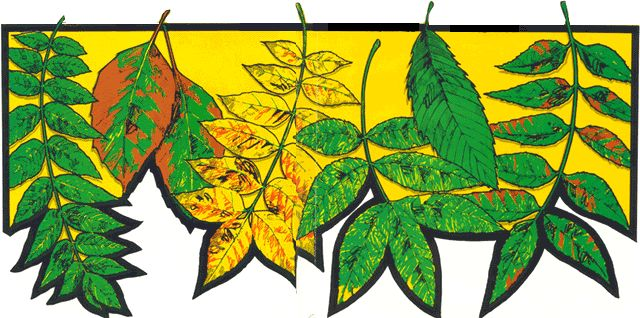

The black walnut, one of our most valued hardwoods, is found over most of the eastern half of the United States from southern New England to southern Georgia. The tree is a majestic sight, towering 70 to 100 feet and covered with graceful sprays of leaflets. If you have one on your land, treasure it . . . they're becoming scarce.
The heavy wood is prized for cabinetmaking and is the traditional material for fine gunstocks. The sap of both this species and the butternut can be boiled into syrup and sugar. Walnut bark is useful in tanning, and the husks around the nuts yield a long-lasting yellow-brown dye (as you'll learn if you get the juice on your skin).
Lovers of wild foods look forward to October and November, when the black walnut's big green globes drop to the ground. The rind is tenacious and not easy to strip from the freshly gathered nut... but the delicious harvet is worth the effort.
The beech is a large tree-60 to 80 feet-high-with smooth gray bark and oval leaves. It's a familiar part of the hardwood forest and also a popular shade and ornamental species. Very handsome it is, too, especially in the fall when the foliage turns gold or dark copper. Beeches are found from southern Canada to east Texas and south to Florida, but bear more nuts in the northern part of their range.
The hard, strong wood of the beech is made into tool handles, shoe lasts, woodenware, veneer and inexpensive furniture. The inner bark has been dried, ground and used for flour in lean times. Mattresses used to be stuffed with the leaves, which are springy and last for several seasons.
The tree bears small, four-part, bristly burrs that ripen around October and open to reveal two triangular nuts. The kernels are tiny, but sweet and nourishing. Roasted and ground, they're said to make a pleasing coffee substitute.
The butternut or white walnut looks much like a smaller black walnut (40 to 80 feet) with lighter colored bark. It thrives farther north than its larger relation, however, and grows higher in the mountains.
Butternut wood is soft and weak . . . easy to work but not especially valuable. The husks and inner bark contain a very effective dyestuff, and Confederate soldiers were sometimes called "butternuts" because their homespun uniforms were colored brown with the help of this tree.
Pale-green, half-grown butternuts can be scalded, rubbed smooth and soaked in strong brine (change the liquid every day) for a week. Then drain the nuts, dry them and pierce 'em with a large needle. Pack the nuts with dill and pickling spice or a sprinkling of nutmeg, ginger and cloves and fill the containers with boiling cider vinegar. Seal and wait a month... for what some oldtimers call "the best pickle ever".
Hickories are relations of the walnuts. They're large, well-shaped trees, 60-80 feet high, and thrive best in open woods or at the edges of forests where they have plenty of light. Most of the several species (other than the pecan) are found all over the eastern half of the United States from lower N ew England to the South.
Some folks say that harness racing could never have been developed without the tough, elastic hickory wood that goes into the sulkies. Hickory is also celebrated as the best raw material for skis, axe handles, chair backs, barrel hoops and other wooden items that have to do hard work. Every outdoor cook knows its value as a fuel . . . and who hasn't heard of hickory-smoked hams?
The shellbark hickory (its bark comes loose in long strips) is the most popular ° for its nuts. The fruit from any hickory, however is wholesome to eat if the flavor is good.
The chestnut is included on this poster as a tribute to its former importance . . . and in the hope that it may someday be re-established in a disease-resistant form.
The native American chestnut was highly valued by the early settlers. Its wood was used for furniture, fencing and musical instruments, the bark produced tannin and the big, nutritious nuts were an important food (even a money crop, since they were harvested in large amounts for the city markets). Then, about 1900, a fungus disease reached this country from eastern Asia. The Asian chestnut, which had been exposed to the blight over many centuries, was more or less immune . . . but the American trees sickened rapidly and in one human generation we lost a dominant forest species.
A few old chestnut stumps survive, and sometimes still send up sprouts which may reach a height of 20 or more feet before succumbing to the blight.
Unlike other hickories, the pecan originally had a very limited range: from southern Indiana, Iowa and Kansas south to Alabama and Texas. The: commercial importance of the nuts, however, has led to the planting of orchards in many parts of the South. This impressive tree-80 to 100 feet high-has been used as an ornamental as far, north as Massachusetts . . . but its real home is in warm, rich bottom land.
Pecan wood is rather brittle and less useful than that of the other hickories. When it comes to delicious eating, though, many people feel that the fruit: of the pecan is the aristocrat of the, group. The long, pointed nuts-as you, already know if you're lucky enough to live near a wild tree-are enclosed in thin husks divided into quarters by lengthwise ridges. The shells of the wild pecan are usually thicker than those of cultivated varieties . . . but that's not go ing to stop anyone who's ever tatted tasted the kernels
|
 |
 |
 |
|
 |
 |
 |
|
 |
 |
|